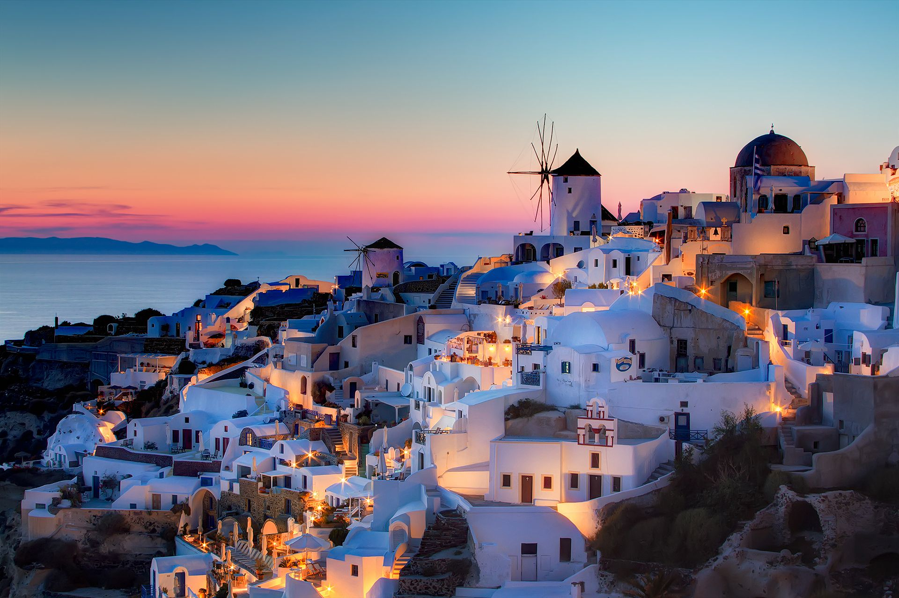
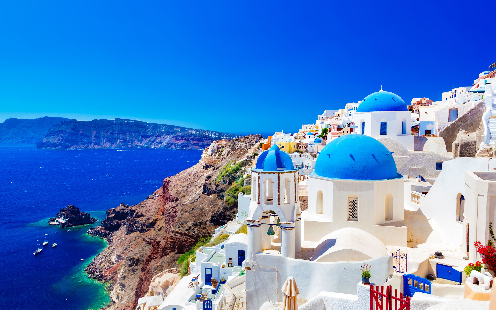
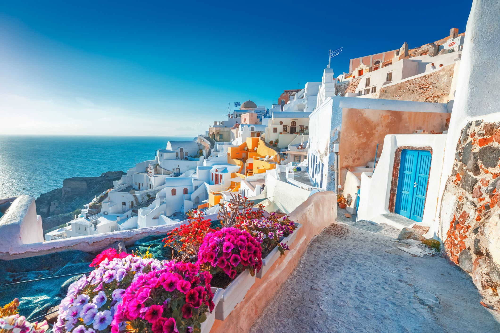

Abitanti: 16.000
Capoluogo: Fira
Superficie: 1.400 km²
Aeroporti: Kratikos Aerolimenas Santorinis
Porti: Athinios | Skala
Il nome Santorini ha origine durante l’egemonia della Serenissima Repubblica di Venezia. Deriva da Santa Irene, martire di Tessalonica (Salonicco).
In realtà, i suoi abitanti continuano ancora oggi l’isola con il suo nome più antico, Θήρα, che in greco antico si pronunciava Thera e che in quello moderno è diventato Thira.
Santorini è l’isola dove meglio si può apprezzare la cucina greca, perché le materie prime locali sono di ottima qualità.
Il piatto più famoso dell’isola, diffusissimo in tutta la Grecia, è la cosiddetta fava di Santorini, una purea molto simile all’hummus.
Ciò che rende questo piatto unico al mondo è l’ingrediente principale che non è il legume verde che in Italia chiamata, appunto, fava.
In realtà, si tratta di una differente varietà di legume, il Lathyrus Clymenum, presente sull’isola da oltre tre millenni.
Altro importante prodotto, inserito dall’Unione Europea nell’elenco dei prodotti di Denominazione di Origine Protetta (DOP) e Indicazione Geografica Protetta (IGP),
è il tomataki Santorinis, il pomodorino di Santorini. Il suo aspetto è identico al ciliegino, variante del pomodoro di Pachino.
Tra i vari piatti che vengono realizzati a Santorini con questo prezioso ortaggio, il più celebre è rappresentato dalle domatokeftedes, polpette fritte.
A Santorini si produce il Vin Santo, un vino da dessert con gradazione cromatica dal rosso chiaro al bianco, passando per il giallo paglierino.
Per degustarlo e conoscere la sua storia, è possibile visitare diverse aziende vinicole.
I paesaggi e il mare di Santorini l’hanno resa una delle destinazioni della Grecia più famose al mondo.
In realtà, Santorini è un’isola ricca di arte e di cultura. Il più importante sito archeologico è la Città Preistorica di Akrotiri,
nella parte meridionale dell’isola, distante pochi chilometri dalla celebre Red Beach. Gli scavi archeologici portarono alla luce un gran
numero di manufatti recuperati durante gli scavi archeologici, oggi conservati nei musei di Fira.
Altro importante sito archeologico è quello di Fira Antica. Si trova a un’altitudine di circa 400 m s.l.m, in una zona accessibile dalla località turistica di Kamari.
Fu fondata nel IX secolo a.C. dai coloni Spartani giunti sull’isola guidati dal comandante Theras che diede il suo nome alla città (nome che in seguito assunse anche l’isola).
Le cittadine principali di Santorini

Sebbene non sia particolarmente estesa, Santorini ha molti villaggi. Il suo capoluogo è Fira, costruito sul bordo della scogliera che delimita la caldera.
Questa deliziosa cittadina è sempre piena di gente: la mattina quando si fa colazione ai tavoli dei bar di fronte ad un meraviglioso panorama, la sera quando si riempiono i tavoli dei ristoranti e
delle taverne, la notte si affollano i discobar e le discoteche. Nel corso della giornata i turisti passeggiano per le strette vie del centro pieno di negozi, bazar e altre piccole attività commerciali.
Firostefani è il naturale prolungamento a nord di Fira: il confine che li divide è quasi impercettibile.
Sono molto simili anche se Firostefani non deve sopportare i tanti turisti che affollano il centro del capoluogo.
Neanche un paio di chilometri a nord si raggiunge Imerovigli, un paesino sviluppatosi sulla parte più alta della scogliera.
Infatti, è chiamato il balcone di Santorini per gli splendidi panorami che regala. L’atmosfera è molto tranquilla: alcuni ristorantini di buon livello e boutique hotel di lusso.
Celebre in tutto il mondo per i suoi tramonti mozzafiato, Oia è il villaggio più bello di Santorini,
uno dei luoghi più fotografati della Grecia. La sua infinita bellezza non si può descrivere con le parole.
Oia si trova sul bordo della scogliera di Santorini, volgendo lo sguardo alla celebre caldera.
Le sue piccole case luccicanti di bianco e di colori pastello si ammassano una accanto all’altra creando un dedalo vorticoso di stradine.
Kamari e Perissa sono le due località balneari di Santorini più turistiche perché qui si trovano hotel e appartamenti più a buon mercato.
Sono adiacenti, ma separate da una montagna che non permette loro di toccarsi. Le loro spiagge sono tra le più frequentate dell’isola,
divise dal resto della cittadina da un lungomare pieno di bar e taverne. Per architettura e urbanistica non offrono la tipica atmosfera dei villaggi cicladici pur rimanendo gradevole,
né troppo tranquilla né troppo chiassosa.
In realtà, i villaggi fin qui descritti rappresentano la parte più conosciuta e turistica dell’isola.
Altri piccoli paesini caratteristici di Santorini consentono di vivere appieno il clima autentico e genuino della Grecia.
Per scoprirli, prendi la mia guida completa e aggiornata di Santorini pubblicata nei migliori bookstore online.
Santorini: Opinioni

Città e villaggi - I villaggi di Santorini raccontano la bellezza delle Cicladi. In particolare, Oia è considerato uno dei villaggi più belli della Grecia.
Spiagge e mare - Inutile negarlo: il mare di Santorini non incanta. Le acque sono limpide e cristalline, ma a causa della natura vulcanica dell’isola, spiagge e fondali sono di colore molto scuro e i colori del mare non sono vividi e brillanti come nelle altre isole della Grecia.
Diving e snorkeling - La presenza di molti diving center fa intuire l’alta qualità delle esperienze subacquee. Eppure, non ci sono molti spot per fare snorkeling.
Windsurf e kitesurf - Negli ultimi anni si sta muovendo qualcosa: ci sono due centri organizzati. Inoltre, c’è anche la possibilità di praticare il SUP. Tuttavia, se andate in vacanza solo per surfare, meglio scegliere altre isole.
Attrazioni culturali - Santorini è un’isola ricca di storia. C’è tanto da visitare. La Città Preistorica di Akrotiri è uno dei siti archeologici più interessanti della Grecia.
Paesaggi (panorami, foto…) - Gran parte delle fotografie che promuovono la Grecia sono scattate a Santorini. I paesaggi e i panorami dell’isola sono unici al mondo.
Natura ed escursionismo (hiking, trekking…) - Pur non essendo tanti, i sentieri sono interessanti. In particolare, quello che collega Fira a Oia.
Relax - L’isola più famosa della Grecia attrae ogni anno un numero incredibile di turisti. Difficile trovare, dunque, un po’ di tranquillità. Il capoluogo è sempre gremito di gente, così come le spiagge. Alcuni lidi poco conosciuti concedono un po’ di tregua.
Vita notturna - Ci sono sempre bar aperti, pronti a darti dei fantastici drink, oppure anche delle fantastiche discoteche per divertirsi con amici :) !
Adatta ai bambini - Gran parte delle spiagge sono attrezzate, ma non ci sono servizi specifici per i più piccoli. Inoltre, girare con un passeggino tra i vicoli pieni di scalini di Fira e di altri villaggi diventa un’impresa.
Trasporti pubblici - I pullman sono moderni e ben tenuti, e consentono di raggiungere molti punti dell’isola. Purtroppo, bisogna quasi sempre cambiare bus a Fira.
Prezzi economici - Per non spendere troppo occorre visitate Santorini fuori stagione. Altrimenti, per dormire e mangiare bene e pagare il giusto, basta evitare le zone turistiche.